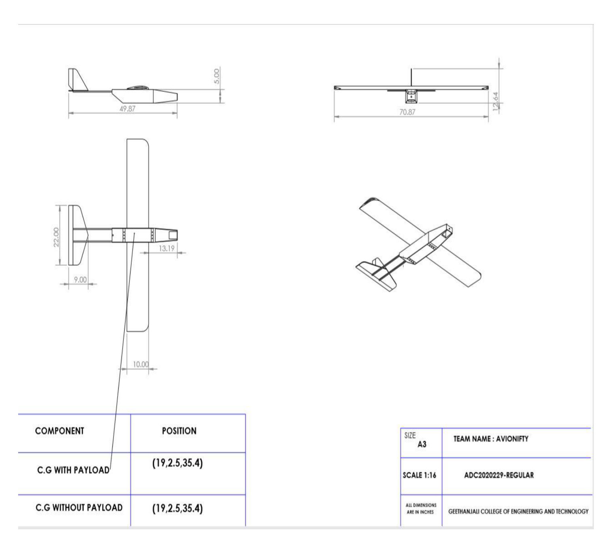
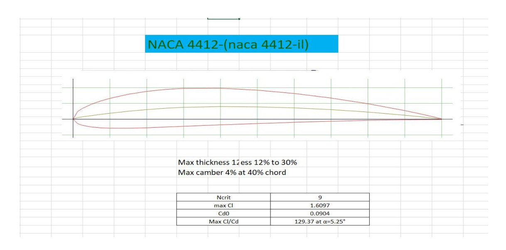

Problem
Design and fabricate a regular-class radio-controlled aircraft that maximizes payload-to-weight performance while meeting SAE Aero Design constraints.
Regular Class Fixed-Wing Payload UAV
An employer-facing interactive case study that translates a 30-page engineering report into a clear technical story: requirements, trade studies, calculations, validated design decisions, and build execution.

Project brief
Design and fabricate a regular-class radio-controlled aircraft that maximizes payload-to-weight performance while meeting SAE Aero Design constraints.
Convert competition rules into measurable requirements, then iterate through concept design, sizing, CAD, structural/flow analysis, electronics selection, fabrication, and payload prediction.
This case study shows end-to-end mechanical engineering judgment: trade-off thinking, analytical calculations, simulation literacy, manufacturing choices, and technical communication.
Performance dashboard
The values below are reconstructed from the report tables and figures. Use the filters and sliders to explain design tradeoffs during employer conversations.
Weight architecture
Total estimated maximum takeoff weight: 5.50 kg.
Rulebook fit
Aerodynamics
The airfoil was selected for high lift, low drag, and manageable pitching moment. The website separates the report’s airfoil-polar result from the aircraft-level flight condition calculations.

Payload prediction
Re = ρVD / μCL = 2W / ρV²SCD = CD0 + CL² / (π · AR · e)P = D · VUse this section in interviews to discuss how analytical estimates connect to geometry, mission profile, and component selection.
Design decisions
Design process
Modeling and analysis
These visuals are extracted from the report and organized as a technical review board. Click any card for a larger view.
Report visual gallery
Employer-ready positioning
30-second pitch: “I worked on a regular-class fixed-wing UAV for the SAE Aero Design Challenge. The objective was to maximize payload within strict dimensional, weight, takeoff, and landing constraints. I contributed to the design-analysis-fabrication lifecycle, including airfoil selection, wing and fuselage sizing, SolidWorks modeling, structural/flow analysis, electronics integration, and payload prediction. The project helped me connect theoretical aerodynamics with real manufacturing and stability constraints.”